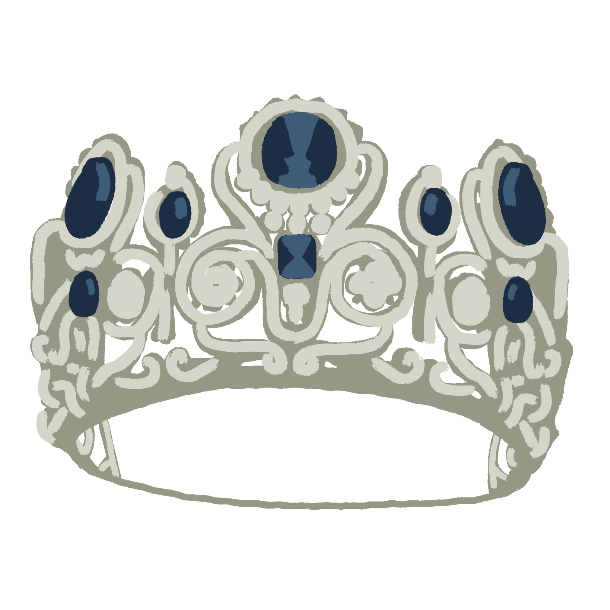
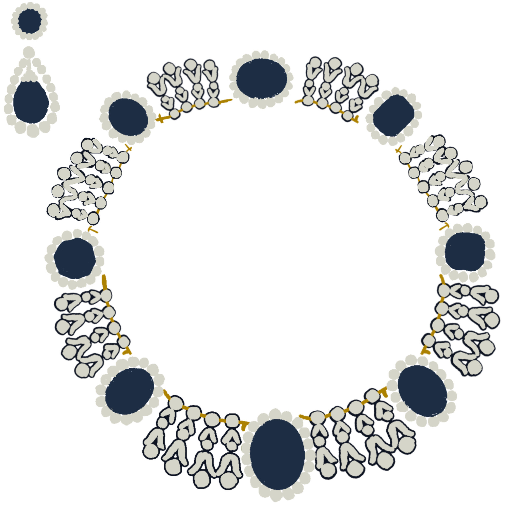
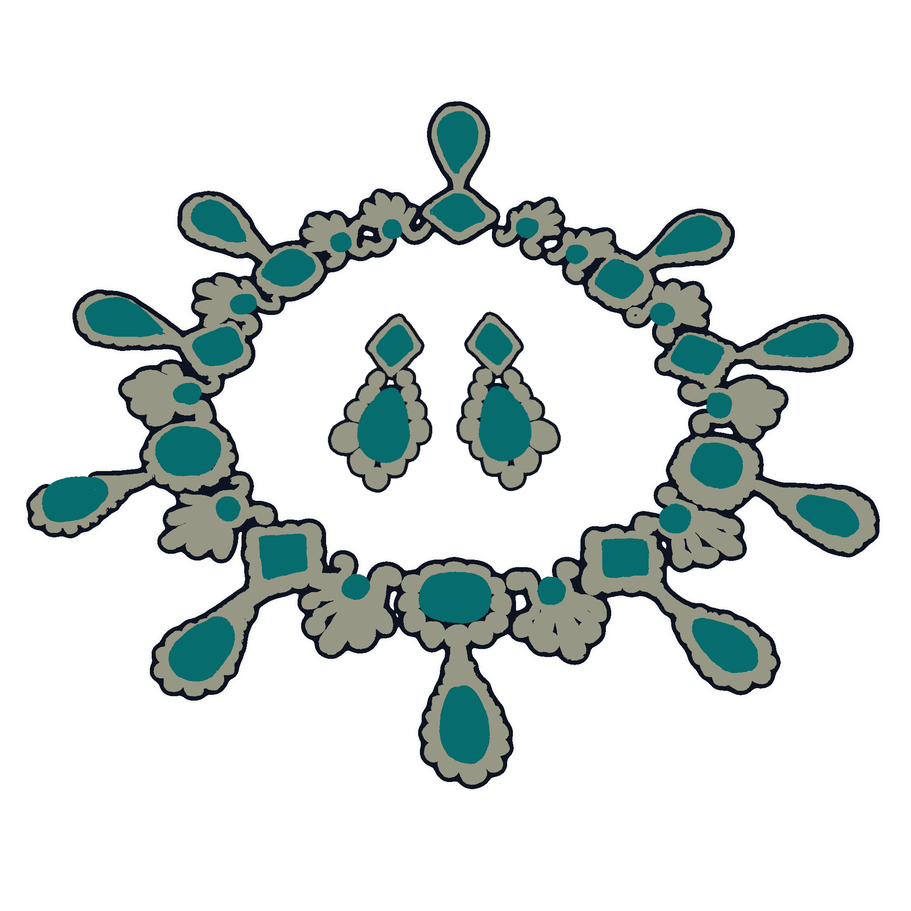
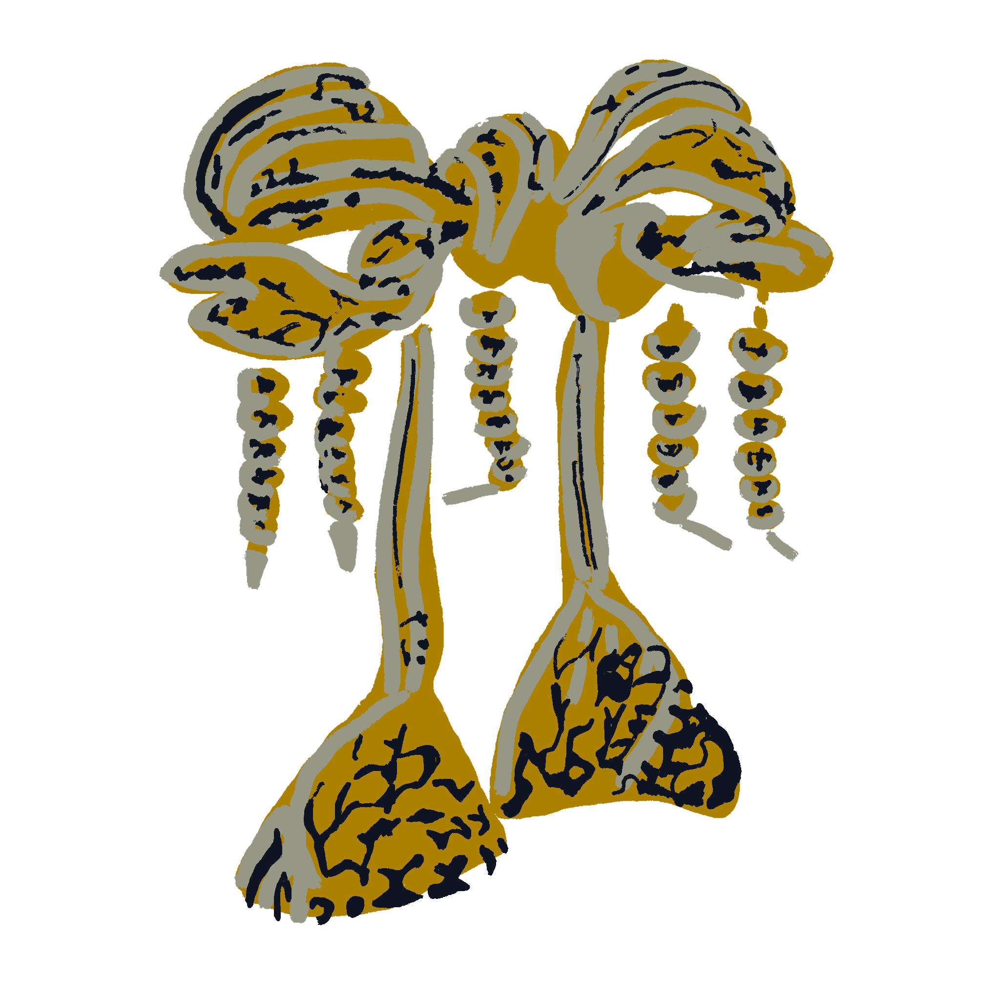
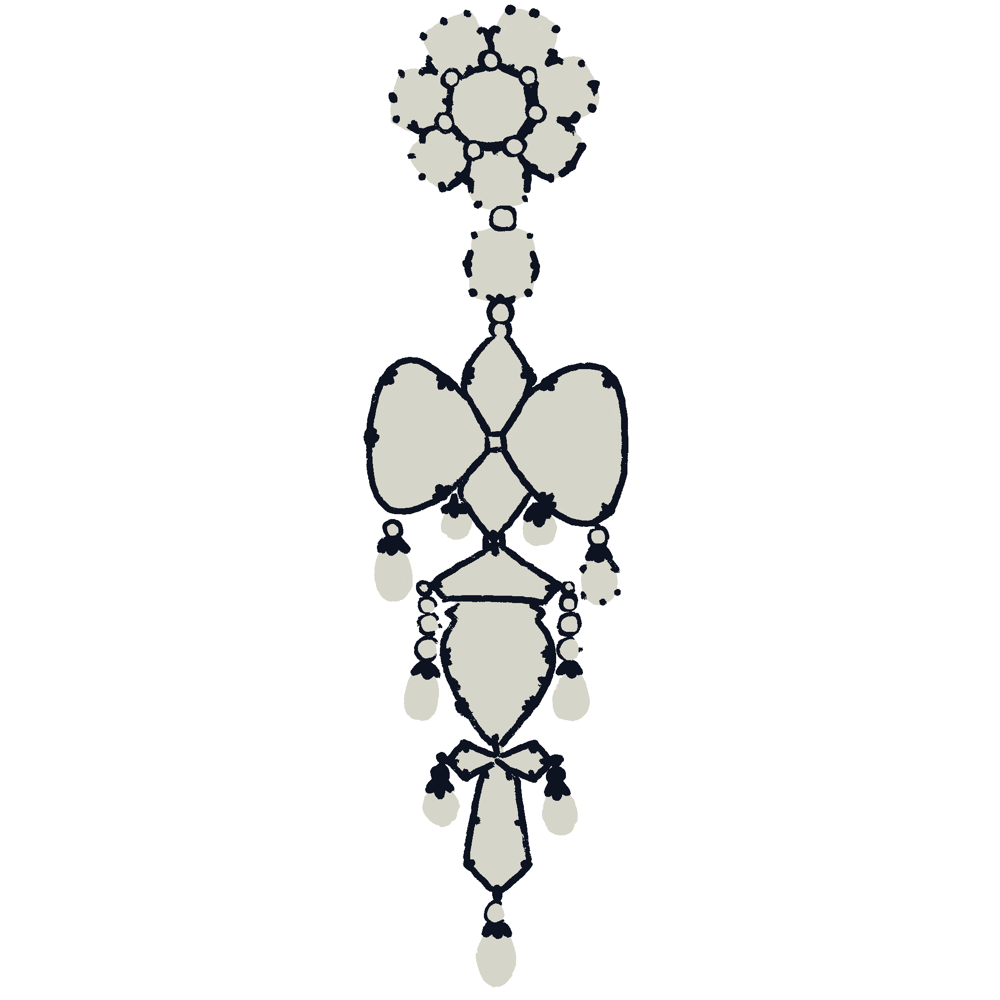

The Stolen Jewels
Read all about the stolen jewels
here.


Diadème de la parure de la reine Marie-Amélie et de la Reine Hortense.
- A set of jewelry worn by Queen Marie-Amélie and Queen Hortense is displayed at the Louvre's Apollo Gallery on January 14, 2020.

Diadème de la parure de la reine Marie-Amélie et de la Reine Hortense
- Necklace and earrings from the emerald set of Napoleon's second wife Empress Marie-Louise shown at the Louvre Museum on May 20, 2021.

Grand noeud de corsage de l'impératrice Eugénie
- 1855, The Empress Eugénie Brooch exhibited during a media preview for a Christie's sale in New York, on April 11, 2008.

Broche dite broche reliquaire
- 1855, The reliquary brooch worn by Empress Eugénie.
Empress Eugénie's Crown (Recovered)